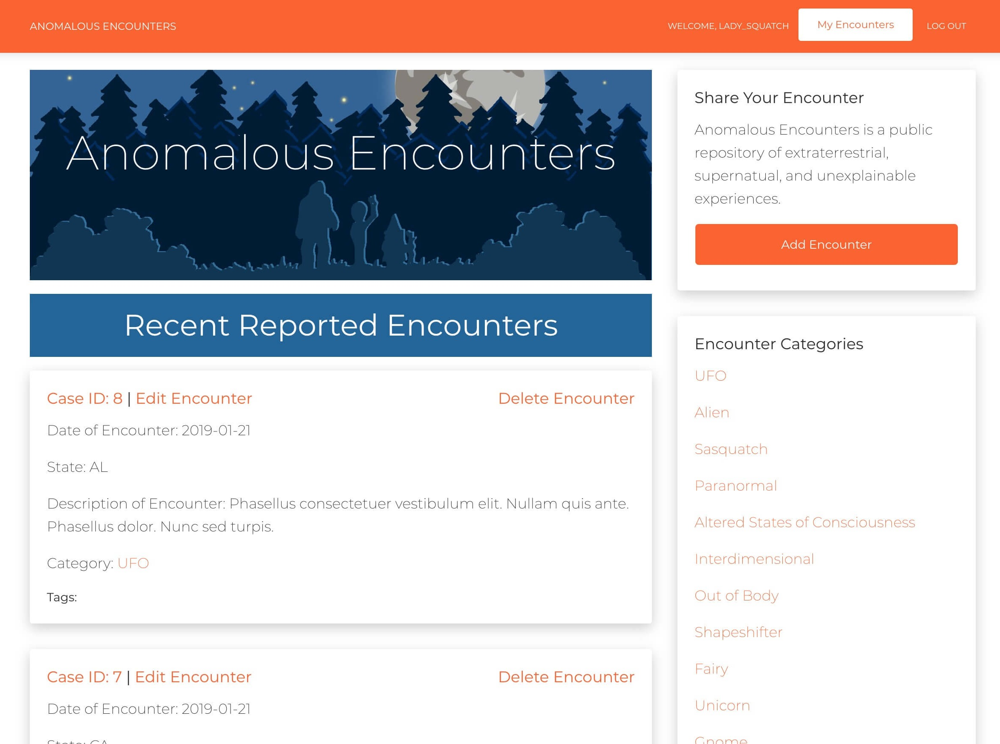
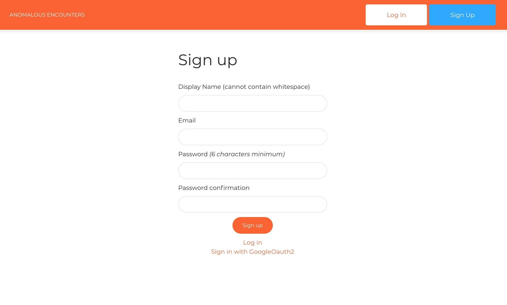
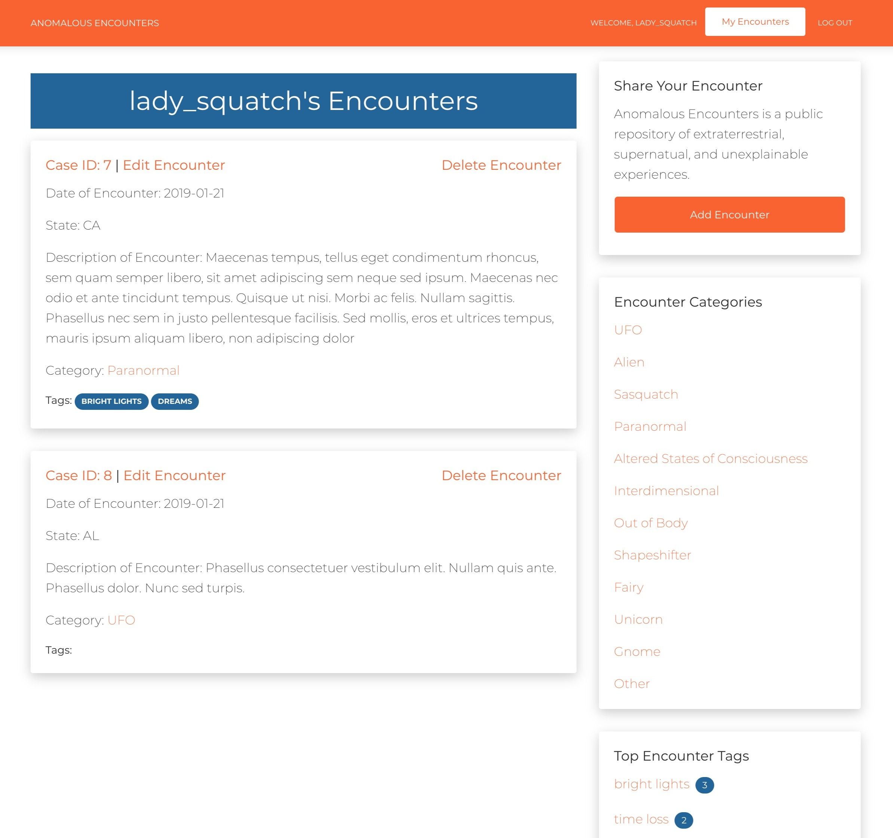
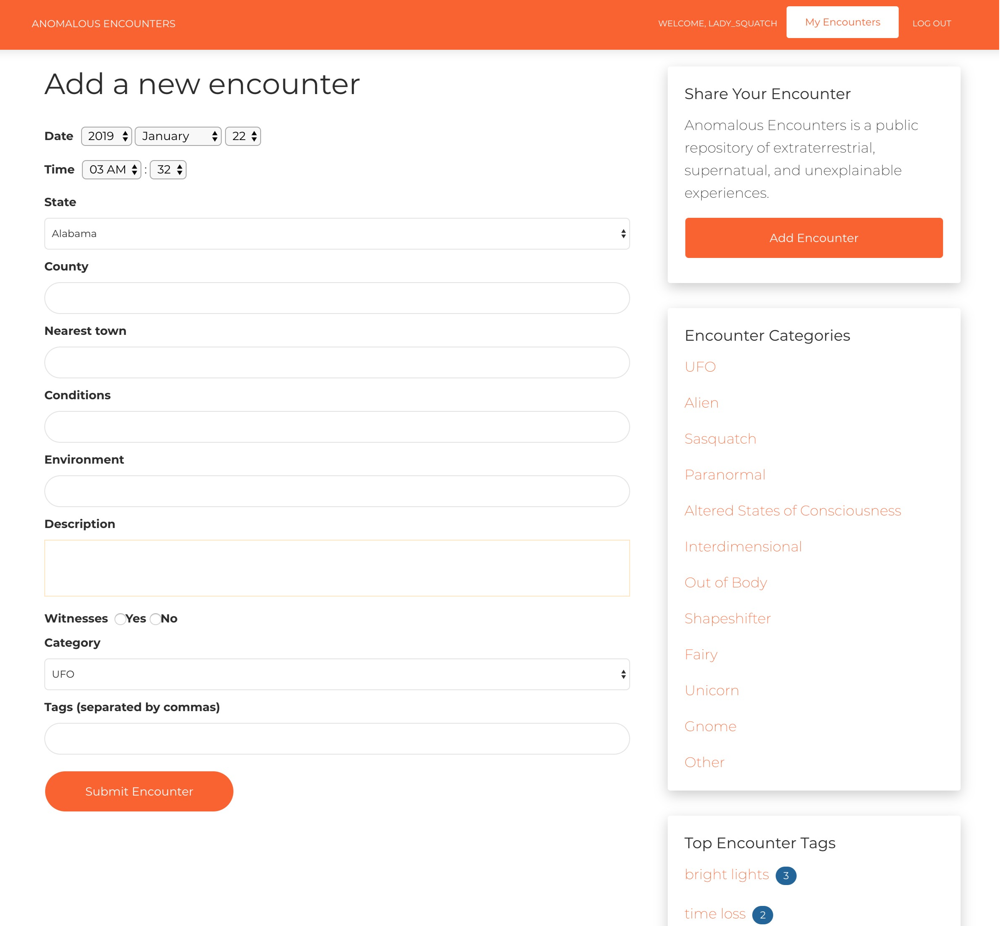

<div id="ajax-page" class="ajax-page-content">
    <div class="ajax-page-wrapper">
        <div class="ajax-page-nav">
            <div class="nav-item ajax-page-prev-next">
                <a class="ajax-page-load" href="earlybird.html"><i class="lnr lnr-chevron-left"></i></a>
                <a class="ajax-page-load" href="earlybird.html"><i class="lnr lnr-chevron-right"></i></a>
            </div>
            <div class="nav-item ajax-page-close-button">
                <a id="ajax-page-close-button" href="#"><i class="lnr lnr-cross"></i></a>
            </div>
        </div>

        <div class="ajax-page-title">
            <h1>Anomalous Encounters</h1>
        </div>

        <div class="row">
            <div class="col-sm-7 col-md-7 portfolio-block">
                <div class="owl-carousel portfolio-page-carousel">
                    <div class="item">
                        
                    </div>
                    <div class="item">
                        
                    </div>
                    <div class="item">
                        
                    </div>
                    <div class="item">
                        
                    </div>
                </div>

                <div class="portfolio-page-video embed-responsive embed-responsive-16by9">
                  <!-- <iframe class="embed-responsive-item" src="https://player.vimeo.com/video/97102654?autoplay=0"></iframe> -->
                  <iframe class="embed-responsive-item" src="https://www.youtube.com/embed/Cf9ASk5r32Q?rel=0" frameborder="0" allow="accelerometer; autoplay; clipboard-write; encrypted-media; gyroscope; picture-in-picture" allowfullscreen></iframe>
                </div>

                <!--
                <div class="portfolio-page-image">
                    
                </div>
                -->

                <script type="text/javascript">
                    jQuery(document).ready(function($){

                        $('.portfolio-page-carousel').owlCarousel({
                            smartSpeed:1200,
                            items: 1,
                            loop: true,
                            dots: true,
                            nav: true,
                            navText: false,
                            margin: 10
                        });

                    });
                </script>
            </div>

            <div class="col-sm-5 col-md-5 portfolio-block">
                <!-- Project Description -->
                <div class="project-description">
                    <div class="block-title">
                        <h3>Description</h3>
                    </div>
                    <ul class="project-general-info">
                        <li><p><i class="fab fa-github"></i> <a href="https://github.com/lauradarlak/anomalous-encounters" target="_blank">Project Repo</a></p></li>
                    </ul>

                    <p class="text-justify"><strong>Anomalous Encounters JS</strong> is a public repository of extraterrestrial, supernatural, and unexplainable experiences. Built with Rails, Anomalous Encounters is a database-backed web application that allows users to record individual encounters that are visible throughout the platform. Users must be logged in to create, edit or delete an encounter. User authentication is handled through the Devise gem with Google OAuth integration, which authenticates users’ accounts with their Google account.</p>
                    <ul class="text-justify">
                        <li>Developed a Rails API backend with an endpoint for encounters</li>
                        <li>Implemented RESTful routing to create a scalable CRUD application</li>
                        <li>Applied OmniAuth for flexible authentication with Google</li>
                        <li>Utilized AJAX to dynamically render requests to API backend</li>  
                    </ul>
                    <!-- /Project Description -->

                    <!-- Technology -->
                    <div class="tags-block">
                        <div class="block-title">
                            <h3>Technology</h3>
                        </div>
                        <ul class="tags">
                            <li><a>Ruby on Rails</a></li>
                            <li><a>JavaScript</a></li>
                            <li><a>Ajax</a></li>
                        </ul>
                    </div>
                    <!-- /Technology -->
                </div>
                <!-- Project Description -->
            </div>
        </div>
    </div>
</div>
